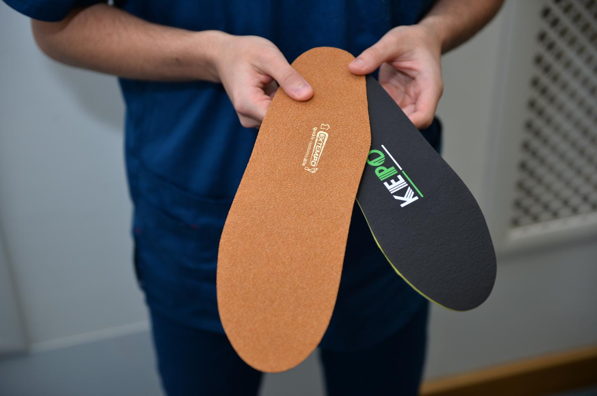

Изготовление стелек от врача-ортопеда за 30 минут

Показания к ортопедическим стелькам
Цель индивидуальных стелек - исключить возможность травмирования стопы, уменьшить давление на связки и суставы нижних конечностей.
Плоскостопие
Плоскостопие может вызвать артроз (заболевание суставов), заболевания позвоночника
Проблемы с позвоночником
Самое распространённое заболевание — сколиоз и остеохондроз
Разная длина ног
Ортопедические стельки помогут скорректировать и эту проблему
Заболевания
Артрозы, артриты суставов нижних конечностей, тендиниты и пяточная шпора, ахиллобурсит, заболевания позвоночника
Частые растяжения
Частые растяжения в области лодыжки.
Пяточная шпора
Частая спутница плоскостопия. Пяточная шпора — это костный выступ, который вызывает боль при нажатии на пятку.
Тяжесть и боль в ногах
Эти тревожные симптомы говорят о проблемах стопы
Запишитесь на консультацию врача-ортопеда
Консультация ортопеда и изготовление индивидуальных ортопедических стелек для профилактики и лечения заболеваний опорно двигательного аппарата
Почему стоит обратиться к нам
В нашем кабинете ведут приём практикующие врачи — ортопеды и мануальные терапевты
Профессионализм
Все врачи, работающие в нашей Клинике, имеют большой стаж практической работы, это: врачи высшей категории, доктора медицинских наук, кандидаты медицинских наук
Качество
На сегодняшний день специалистами создано два основных типа ортопедических стелек. Каждый из них подбирается строго по назначению врача.
Опыт
Все специалисты владеют усовершенствованными технологиями и регулярно принимают участие в конгрессах и конференциях на территории РФ и за рубежом
Наши специалисты
В нашем кабинете ведут приём практикующие врачи — ортопеды и мануальные терапевты
Александров Андрей Сергеевич
Врач ортопед-травматолог, мануальный терапевт по методу FDM
Ксенофонтов Петр Петрович
Врач ортопед-травматолог, мануальный терапевт по методу FDM
Федоров Евгений Сергеевич
Врач ортопед-травматолог, мануальный терапевт по методу FDM
Как проходит диагностика и подбор стелек
Процедура изготовления индивидуальных стелек включает в себя обязательное сканирование стоп, по результатам которого подбираются компоненты стелек согласно Вашим индивидуальным особенностям
1.
Консультация
Врач проведёт осмотр, соберёт анамнез и далобы
2.
Диагностика
На плантоскопе получаем изображение отпечатков ступнёй
3.
Изготовление
Специалист моделирует ортопедические стельки идентичные поверхности ваших стоп
Отзывы
Мы заботимся о здоровье и комфорте наших пациентов. Их отзывы очень важны, чтобы помочь нам сделать все правильно
МС РФ по вольной борьбе, Андрей Захаров:
«Иногда после тренировок или во время бега на длинных дистанциях чувстуется боль и усталость в стопах, а особенно в пятке.
Примерно через месяц я почувствовал, что тяжесть в ногах стала не такой ощутимой и болевые ощущения исчезли. Бег на длинные дистанции и ходьба, даже долгая, не приносит настолько сильной усталости.
Я ношу стельки с любой обувью: кроссовками и обычной обувью, нужно ещё заказать для штангетки»
Юлия Кобякова
«Стельки используют для улучшения рессорной и опорной функции, увеличения выносливости и снижения возможности получения травмы»
Алена Ядреева
«От того, как мы заботимся о растущих ножках малыша, зависит его будущее здоровье 🙌»
Анатолий Панаев
«Мы работаем только с качественными материалами от известных производителей»
Стоимость
У нас можно приобрести индивидуальные ортопедические стельки, цена на которые составляет от 300 за одну пару.
Время изготовления: 30 минут
Наименование услуги
Консультация врача-ортопеда + осмотр на плантоскопе
Изготовление индивидуальных ортопедических стелек фирмы Extempo
Изготовление индивидуальных ортопедических стелек фирмы Formotothics
Изготовление индивидуальных ортопедических стелек фирмы Kepo Ortho
Изготовление индивидуальных ортопедических стелек фирмы SursilOrtho
Стоимость ₽